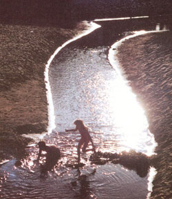
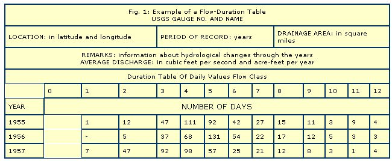
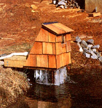
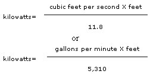
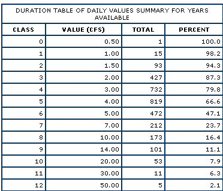
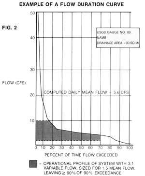
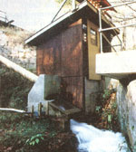
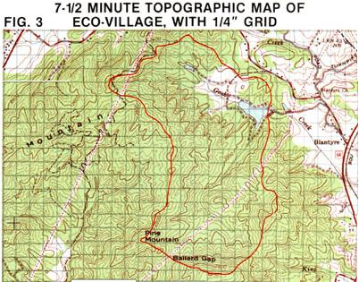

If you have a stream on your property (or dream of owning a place with one), you've probably thought about hydroelectric power. However, though hydroplants can vary in size from MOTHER's two units (shown below) to huge utility-ned-dams, many waterways just aren't capable of producing significant amounts of electricity. In this, the third section of our study of alternative-energy site assessment, we'll explore ways to uncover a stream's power potential and help you learn whether it'd be worth voter while to "go with the flow."
At this time, all practical, home-scale hydroelectric equipment makes use of a fall of greater than five feet. It is the acceleration of gravity and the weight of the water that combine to produce foot-pounds (distance and weight)-the essential ingredients of power. This fall, which is most often called head or pressure head, could be obtained over a very short distance, as is the case with a dam, or it could be developed by a long run of pipe or a flume.
So, as a ground rule, if you can't find five feet of fall over a reasonable distance, waterpower won't work for you. This can be a terrible frustration if you've got a good-sized but basically horizontal stream flowing across your land; you sense that there's energy there, but there's no practical way to get at it. (If and when equipment is developed that changes this situation, you can be sure we'll let you know about it in MOTHER.)
Measuring fall is a straightforward matter, whether the situation calls for crude or sophisticated methods. At a site with a damsuch as MOTHER's hydro site-a simple tape measure works fine. The head is the difference in elevation between the surface of the lake and the water jet that strikes the turbine. (Deciding on the latter point calls for a little planning and imagination.) No matter where the pipe that taps the lake's water supply enters the lake, the weight of water all the way to the surface bears down, producing pressure.
More often, in order to tap a watercourse for electricity, the most practical way to de velop head is to run pipe uphill and pick up the water at a higher elevation. (Then the weight of the water in the pipe bears down, producing pressure.) In this case, measuring head can get a little more complicated. If there are several hundred feet of elevation difference, you can come close enough using a topographical map. (Those parallel elevation lines are pretty darn accurate; the big problem is figuring out where you are on the map.) But for heads of less than 200 feet, you'll need to use some sort of surveying technique.
The quantity of water available is just as important as fall is in determining the amount of power available at a site (before equipment efficiency is considered). In fact, the two are multiplied in the basic hydropower formula:
In the most popular units, figuring 7.5 gallons per cubic foot, the variations of the formula look like this: One of these formulas should be your basic mathematical working tool. Pick one that keeps the units convenient: Big streams are easier to cipher in cubic feet per second (cfs), and little ones are more manageable in gallons per minute (gpm). Just remember to keep your units consistent, and don't forget that the result is merely the power potential before friction, heat, and Mother Nature's other gremlins lower the system's efficiency.
Sadly, there's no central clearinghouse offering easily accessible comprehensive data on streamflow characteristics. The information is out there, but the sources are various. Chances are that the stream you're interested in isn't gauged, at least not as close to the source as you are. You'll be hard-pressed to find direct flow information on streams that flow less than 10 cfs (4,500 gpm), so the next best approach is to compare your stream to one that's close by and has similar characteristics (i.e., a drainage basin that's about the same elevation and that sees similar rainfall patterns and amounts).
The primary source for streamflow data is the United States Geological Survey, through its National Water Data Retrieval and Storage System. These data may be available for your area in a major public or university library. If not, you'll have to locate your district or subdistrict office of the USGS and request data from the people there. Study maps of the area around your stream so that you're familiar in advance with the larger streams-ones for which the USGS is likely to have historical flow records. Be prepared to specify which section of which river you're interested in. It's also worth checking with the U.S. Fish and Wildlife Service, since it gauges streams with sporting potential that would otherwise be too small to be of interest to the government.
State agencies may also be helpful. Start at your local soil and water conservation service office, and tell the staff what you're after. If they can't provide records, they may be able to direct you to an environmental or wildlife agency that can. In most states, one of these agencies administers the inspection program of the U.S. Army Corps of Engineers' dam safety program. That office will have access to streamflow records.
Other local organizations may be able to provide more detailed information. Perhaps the stream you're interested in getting records for eventually becomes a part of a municipal water supply. In that case, the water service personnel probably gauge the stream. (Tell them right away that you just want to correlate their stream to yours; otherwise they're likely to be alarmed at the prospect of your dabbling with their water source.) Similarly, waste-treatment facilities are also interested in streamflow.
Flow records are presented in two different ways: as a flow duration table or a flow duration curve. The former is composed of raw numbers-our example (see Fig. 1) is in days, but you may get one with monthly valuesmuch like the frequency-of-occurrence values in the wind tables we looked at in the last issue.
The flow duration curve is derived from the raw data in the flow duration table and is easier to interpret directly. An example is shown in Fig. 2. The values for the graph come from the summary section of the table, in the percentage column. These percentages are called percentage exceedance figures-meaning that the flow will be greater than or equal to the cfs number shown on the vertical axis for the percentage of time indicated on the horizontal axis. (Note that the cfs numbers are stated next to the class in the summary.) The mean flow comes from an average of the averages of the ten periods.
The flow duration curve may look like graphic mumbo jumbo at first glance, but it proves to be very handy in making design decisions later on. The area between the curve and the axes is the flow available at the gauging station, and the percentage exceedance numbers will tell you what part of it is usable when you consider equipment and environmental restraints. But first you have to correlate these numbers to your own stream.
The best way to make use of nearby historical flow records is to make your own measurements and compare, but you can use the USGS information to make a preliminary judgment of a stream on a piece of property without ever leaving your living room. To find out how to measure a drainage area and make cfs-per-square-mile drainage comparisons, skip over MEASURING FLOW, and read CORRELATION.
There are three basic ways to measure flow, and each is appropriate to particular situations. The first is pure common sense: See. how long it takes to fill up a bucket. If a 5-gallon pail fills in 10 seconds, the flow of the stream is 30 gallons per minute. The "bucket method" is a reasonably accurate measurement of flow-if your stream is small enough to make the approach practical. (At MOTHER's EcoVillage site, the 1,500 gpm flow would fill a 55-gallon drum in about two seconds.)
For larger streams, you can use the "float method" to get a very general idea of flow. It consists of calculating the cross-sectional area of the stream, from a width and several depth measurements, and measuring its speed by timing how long it takes a floating object to travel a given distance. By multiplying the cross-sectional area in square feet by the speed in feet per second, you get cubic feet per second.
Because the roughness of the stream's bottom disturbs flow, the surface speed of the water is seldom representative of the overall speed. In fact, the actual average speed may be only half the measured speed. For a stream with an irregular bottom, assume that the flow is about 60% of what you measure. If the stream's bottom is smooth-covered with sand or well-worn rock-multiply by 0.8.
Considering the inaccuracy of the speed measurement and the uncertainty of calculating cross-sectional area, you can't assume that the float method is more than 50% accurate either way. This is unacceptable for designing a system but will give you a general idea of the power available at a site on the day you measure.
The preferred way to measure flow in streams too large for the bucket method is called the weir method.
Building a weir across a stream is roughly equivalent to putting up a temporary damit's not something you'll likely do when looking for property. Once you've decided on land with hydro potential by measuring head and checking instantaneous flow by the float method, though, it may be time to build a weir and settle down to measure flow over an extended period. Directions for building and using a weir are included in books such as Harnessing Water Power for Home Energy, by Dermot McGuigan (Garden Way Publishing, 1978, $6.95) or in MOTHER's Crossflow Turbine Plans (see page 149 for ordering information). In addition, the U.S. Forest Service-contact your area Forest Service headquarters-has an excellent instruction sheet for building a V-notch weir.
No instantaneous flow measurement-no matter how accurate-is of much value by itself, because there's no way to know how that measurement relates to typical conditions. If you want to avoid buying equipment that's too large to be run during dry spells, you have two choices: Be conservative and install a turbine that has far less flow capacity than what seems to be the average-say, one-fourth of that-or measure the flow for an extended period and correlate it with flow data from the USGS for a nearby stream. One year's worth of measurements is just about the minimum amount of data that's useful. But since you'll have to wait well into the next year for the flow data on a nearby stream to be published for that year, why not continue to measure?
Once you have your own and the USGS's flow figures, you need to make the two sets of numbers comparable by adjusting them for the drainage area. Use 7-1/2-minute USGS topographic maps, outlining the ridges that determine the drainage area with a pen, to determine the region your stream drains. On a 7-1/2-minute topo, a 1/4" square is equal to a little more than 1/100 of a square mile (5% more for the picky). Make yourself a 1/4" grid (20 X 20 should do) on a piece of clear plastic, lay the grid on the map, and count the squares covering the area your stream drains. The total number of squares is the number of onehundredths of a square mile. See Fig. 3 for an example.
Those of you who are just prospecting on paper can take the USGS-determined drainage per square mile and apply it to sites on your topo map. There may well be differences in drainage for the two areas-drainage usually increases with altitude, for example-but you'll have a reasonable idea of power potential without even getting in the car.
Those of you who have your own flow figures are ready to do a little multiplying and dividing and to compare your drainage (in cubic feet per second per square mile) to that of the seemingly similar USGS stream for the measuring year. If the numbers are close, you have the potential for good correlation. Move on to see how the variation in flow through your year's measurements compared to those of the USGS stream for the same year. That is, were the highs and lows similar in value when compared to the average? If the flow duration curves of the two streams parallel each other for the measuring year, you can use the gauged stream's historical trends to judge your own. The relationship of the gauged stream's flow in the measuring year to that of the historical record should be the same as the relationship of your stream's flow in the measuring year to its long-term trends.
Limitations imposed by hardware and the environment prevent any hydro system from making use of all the flow in a stream. To adapt to different flows, a hydro turbine must be able to adjust its flow rate-something that many very small turbines aren't good at doing. MOTHER's crossflow turbine, for example, cannot be adjusted; if the pressure in the pipe stays equal (that is, if the head remains the same), it will always use the same amount of water. Pelton wheels with two nozzles, on the other hand, can use flows between about 35% and 100% of their design capacity. Few small devices can exceed that range, so the maximum-to-minimum flow of turbines in our size class will seldom exceed a three-to-one ratio.
Depending on whether you desire maximum annual power output or maximum power reliability, you would pick very different values on your flow duration curve. To maintain some power production at all times, the minimum size might be 10% of the 90% exceedance flow-or about 0.2 cfs in our Fig. 1 example, which would limit maximum flow to 0.6 cfs.
To produce maximum power at our example stream, however, you'd opt for a threeto-one flow range that would cover the maximum area on the flow duration curve-perhaps the 3 to 9 cfs range. (The maximum power output would be 15 times that of the previous example.) Bear in mind, though, that 20070 of the time there wouldn't be enough water to operate the system at all. And that assumes that you'd take all the water from the stream at the 80% exceedance flow, something you never want to do, from an environmental standpoint. To leave at least 90% of the 90% exceedance flow (1.5 cfs) in the stream at all times, you'd have to shut the equipment down whenever the flow dropped to 4.5 cfs. That would mean no power production about 40% of the time.
You can make these sizing decisions by measuring the areas under the curve and compromising with your needs in power reliability. If you're weary of calculation by this point, though, here are a couple of rough rules of thumb for producing maximum annual power in most temperate climates: If your equipment is adjustable three-to-one, pick a maximum size equal to about 1.5 times the average flow rate, and plan to shut down whenever the streamflow falls below the 70% exceedance level. (The shaded area on Fig. 2 shows this procedure.) If your equipment has a fixed flow rate, pick a maximum size equal to about one-half the average flow rate, and plan to shut down when the streamSow falls below the 70% exceedance level.
Laborious as this whole approach may seem, it will help you avoid making expensive mistakes in hydropower development. Learn from our experience: At Eco-Village we picked a fixed-flow turbine size equal to the mean flow rate-about twice the capacity we now wish we had installed. Our annual power output is scarcely greater for the choice. Only the costs went up!
|
 STAFF PHOTOS |
 |
 |
|
 |
 |
 |
|
 |
 |
|